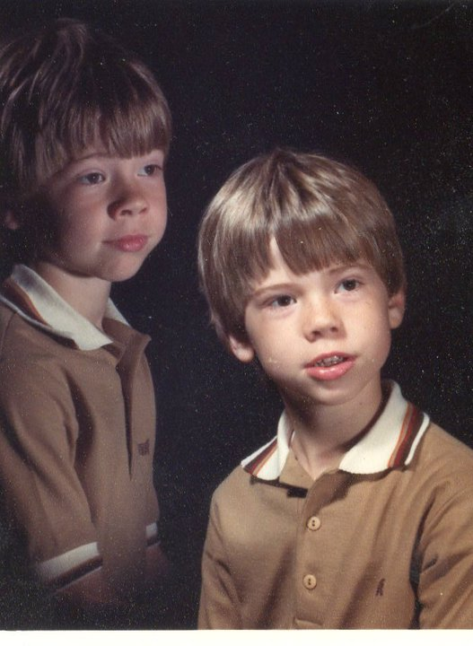

Aaron Harvey
In February 2015 I discovered how to enter the world of coding. For years I had heard that I must start coding but I didn't have any idea how to start. After researching for about a month I found that there was a code school here in Tampa St. Pete. I joined the Iron Yard for their Ruby on Rails program in May of that year and my love for coding started in full force.
I have spent the past ten years teaching. I started teaching math at the middle school, high school, and community college levels for the first 5 years. It was in my fifth year teaching that I interviewed for my current teaching job as the Student Success Coach. I am able to work with students who aren't working to their full potential and I try to get them to see that.
I am married to my beautiful wife Lenny who is a extremely talented ceremics and sculpture teacher. We have two uniquely delightful daughters who teach me how to be a better dad each day. We also have two cats who entertain us with their catlike antics each day.